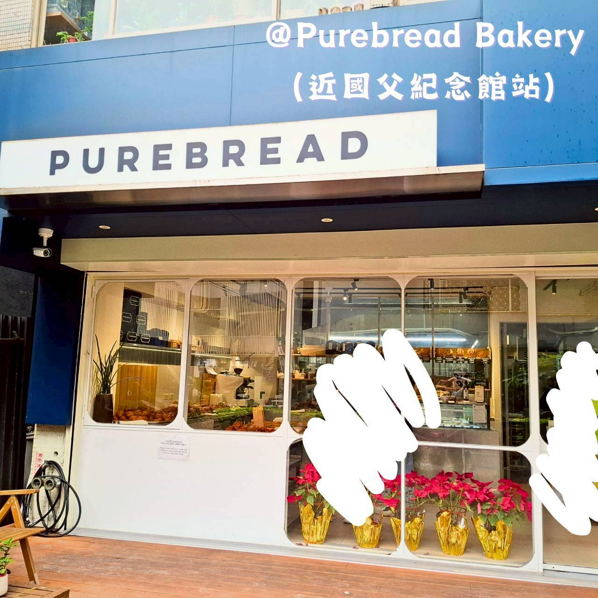
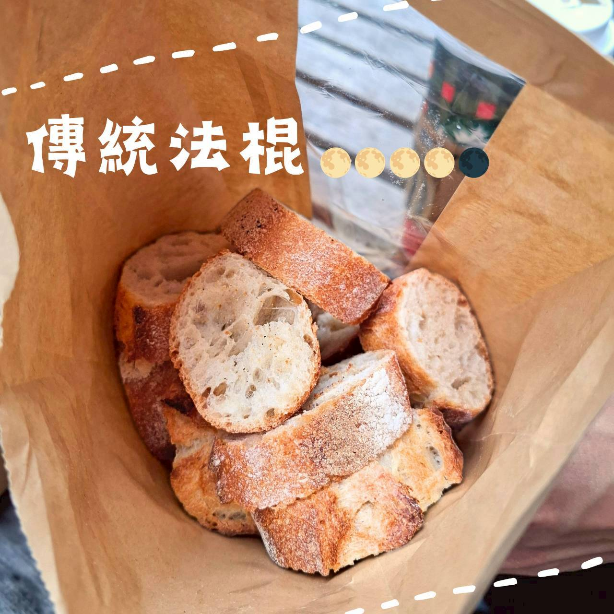

Purebread Bakery
1️⃣ 基本資料
- 餐廳名稱：Purebread Bakery
- 地點：台北市大安區光復南路308巷21號（鄰近捷運國父紀念館站）
- 價位區間：NT$60–NT$250
- 營業時段：10:00–20:00
- 是否需訂位：無
2️⃣ 餐廳飲食類型與整體環境
餐廳飲食類型：歐式麵包店
目標客群：歐式麵包愛好者、日常早餐午餐
總體環境氣氛：簡約白色系歐洲風格，有戶外木造長桌椅，可以悠閒享受美食。

3️⃣ 餐點評價
✨️ 蕃茄起司佛卡夏
好柔軟啊！番茄起司的風味不算重鹹，淡淡地承托麵包本身。一口接一口不會感到厭倦，適合當作平日中餐，忙碌生活的救星。
✨️ 傳統法棍
外酥內軟、乾香四溢。不僅適合單吃，也很適合搭配培根之類的配菜，不搶味。切片後的大小一口吃剛好，不會有野蠻的吃飯畫面破壞形象。

✨️ 可頌馬芬
喀嚓！將可頌做成馬芬形狀，卻沒有影響該有的酥脆度。馬芬麵包體的軟綿，搭配濃郁的焙茶奶油內餡，溫潤海嘯侵襲，非常驚艷。推薦搭配茶類飲料中和最後的黏膩感。
4️⃣ 觀點與總結
：佛卡夏出乎意料的美味，之後想嘗試其他口味的佛卡夏。（麵包體很鬆軟！！）
🐸：所有麵包感覺都很美味，都很值得吃過一遍！！（價格也算可以接受，份量當做正餐也可以）
🌟評分
口味評分 0–5 分：4.5/5
回訪意願度 0–5 分：4.5/5
（想嘗試各種口味，有意願回訪）
#purebreadbakery #麵包 #佛卡夏 #法棍 #可頌 #馬芬 #國父紀念館站 #國父紀念館站美食 #早餐 #早午餐 #下午茶 #點心 #台北美食 #一球情侶台北吃喝